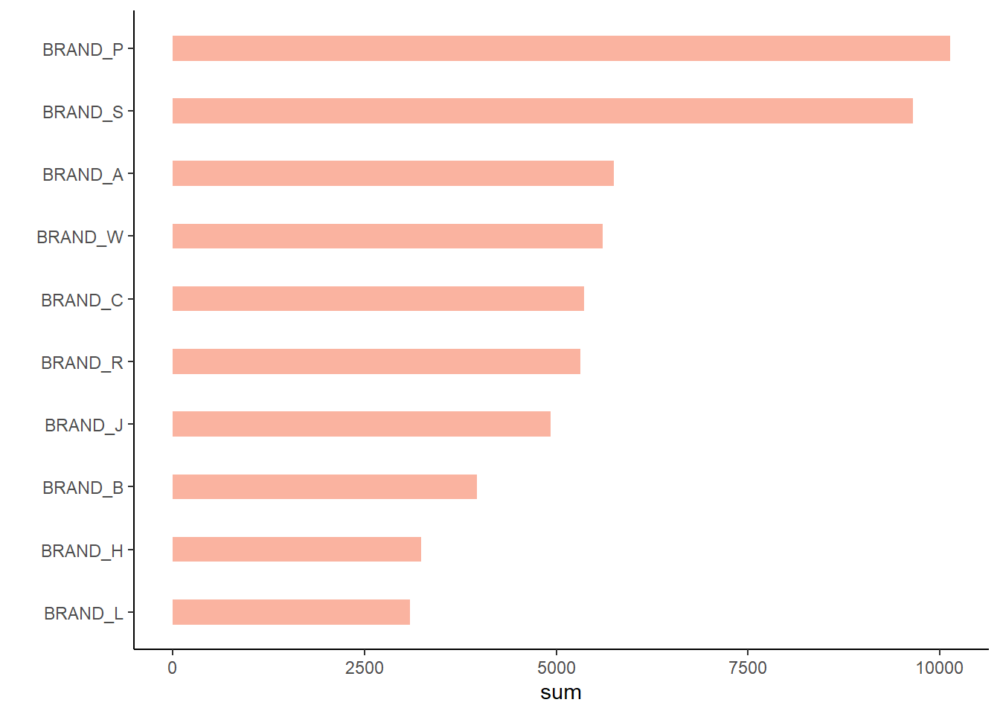

library(bigrquery)
bigrquery::bq_auth(path = "mandat-440801-892ff3e5ddf9.json")7 Menyambungkan R dengan BigQuery
Interaksi dengan basis data dilakukan untuk mendapatkan informasi yang dapat digunakan sebagai salah satu dasar penyusunan keputusan bisnis. Oleh karena itu, dalam analitika data, digunakan analisis yang lebih dari analisis deskriptif dan diagnostik. Kondisi tersebut membuat kombinasi basis data dan aplikasi statistik menjadi penting untuk digunakan.
Sistem basis data yang digunakan dalam panduan ini adalah BigQuery. Kemudian basis data tersebut diakses menggunakan R. Untuk kebutuhan tersebut, package yang digunakan adalah bigrquery karya Wickham and Bryan (2024).
7.1 Komponen penyambungan R dengan BigQuery
Untuk menyambungkan R dengan BigQuery dibutuhkan beberapa komponen. Komponen-komponen tersebut adalah:
Basis data di BigQuery yang akan diakses
BigQuery API sebagai kunci untuk mengakses basis data
Package
bigrqueryuntuk mengubungkanRdengan BigQuery.
7.2 Tahapan penyambungan R dengan BigQuery
Setelah semua komponen telah tersedia, maka tahap pertama penyambungan R dengan BigQuery adalah menjalankan package bigrquery. Selanjutnya, memberi tahu BigQuery bahwa BigQuery API tersedia dengan menuliskan lokasi file API berada. Di Panduan ini langsung menuliskan nama file API -dalam format .json- karena file tersebut berada dalam directory project.
Tahap kedua adalah mengakses basis data. Informasi yang diperlukan adalah nama project, nama dataset dan billing. Nama project yang digunakan adalah mandat-440801 dan nama dataset adalah mandat. Informasi billing diisi dengan My First Project karena project ini sifatnya bawaan sehingga tidak membutuhkan biaya.
con <- dbConnect(
bigrquery::bigquery(),
project = "mandat-440801",
dataset = "mandat",
billing = "My First Project",
use_legacy_sql = TRUE)Tahap ketiga adalah mencari tahu tabel apa saja yang tersedia di dalam basis data mandat-440801. Jika tahapan ini berhasil maka penyambungan R dengan BigQuery berhasil.
bigrquery::bq_dataset_tables(con)[[1]]
<bq_table> mandat-440801.mandat.mandat-customer
[[2]]
<bq_table> mandat-440801.mandat.mandat-pembelianTabel yang tersedia di dalam dataset mandat adalah mandat-pembelian dan mandat-customer. Selanjutnya, informasi nama variabel penyusun tabel dapat diketahui dengan menjalankan perintah berikut.
dbListFields(con, 'mandat-pembelian')[1] "order_date" "customer_id" "product_id" "brand" "quantity"
[6] "item_price" 7.3 Manajemen data
Akses ke tabel yang tersimpan di dalam sebuah sistem basis data telah berhasil. Selanjutnya adalah mengelola data tersebut. Karena data tersebut tersimpan di dalam sebuah basis data maka bahasa yang digunakan adalah bahasa SQL.
Penggunaan bahasa SQL di dalam R diakomodasi oleh package bigrquery. Sedikit berbeda dengan package tidyquery, Package bigrquery menyimpan perintah SQL terlebih dahulu kemudian mengekstrak hasil query. Berikut ilustrasi penggunaan bahasa SQL dengan bigrquery untuk mencari tahu berapa banyak barang yang terjual selama tahun 2019 untuk tiap brand.
query <- paste("SELECT brand, SUM(quantity) AS sum
FROM `mandat-440801.mandat.mandat-pembelian`
GROUP BY brand
ORDER BY sum
DESC")result <- bq_project_query("mandat-440801", query)
brand_sum <- bq_table_download(result)7.4 Visualisasi data
Penyampaian informasi dengan grafik atau gambar memiliki keunggulan kecepatan dan kemudahan informasi diserap oleh kebanyakan orang. Tabel banyaknya barang terjual berdasarkan brand di atas dapat disampaikan menggunakan grafik seperti berikut.
library(dplyr); library(ggplot2)
brand_sum %>%
ggplot(aes(x= reorder(brand, sum), y= sum)) +
geom_bar(stat="identity", fill="#f68060", alpha=.6, width=.4) +
coord_flip() +
xlab("") +
theme_classic()